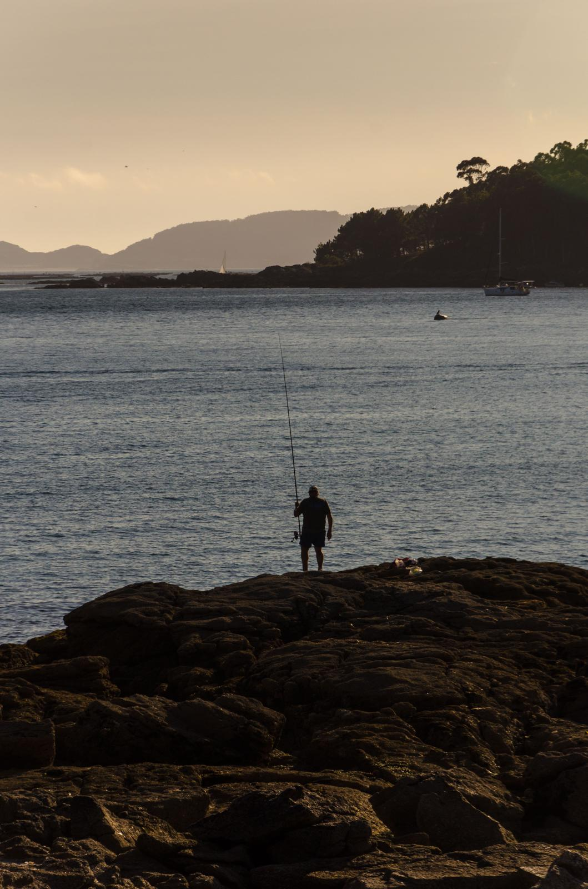
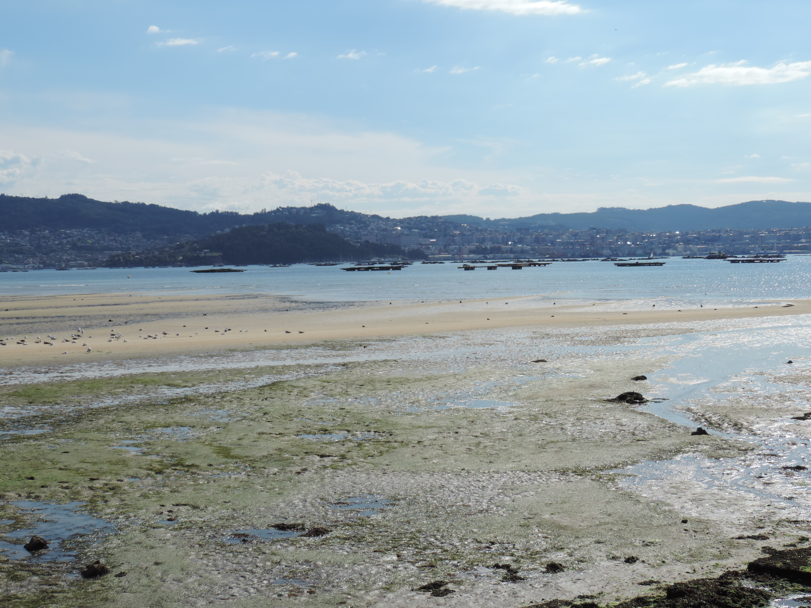
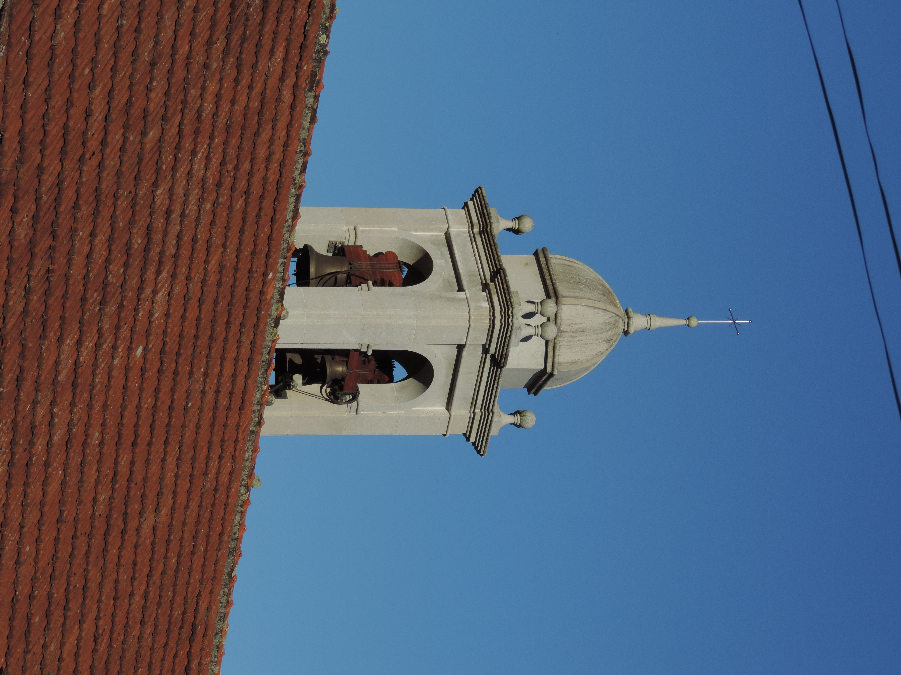
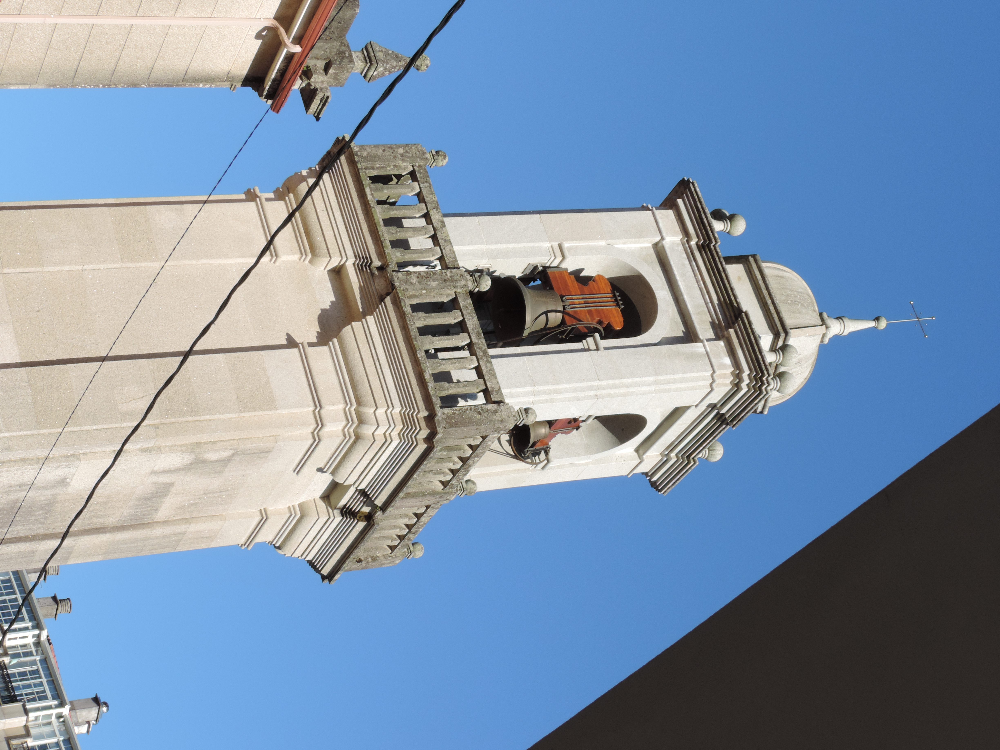
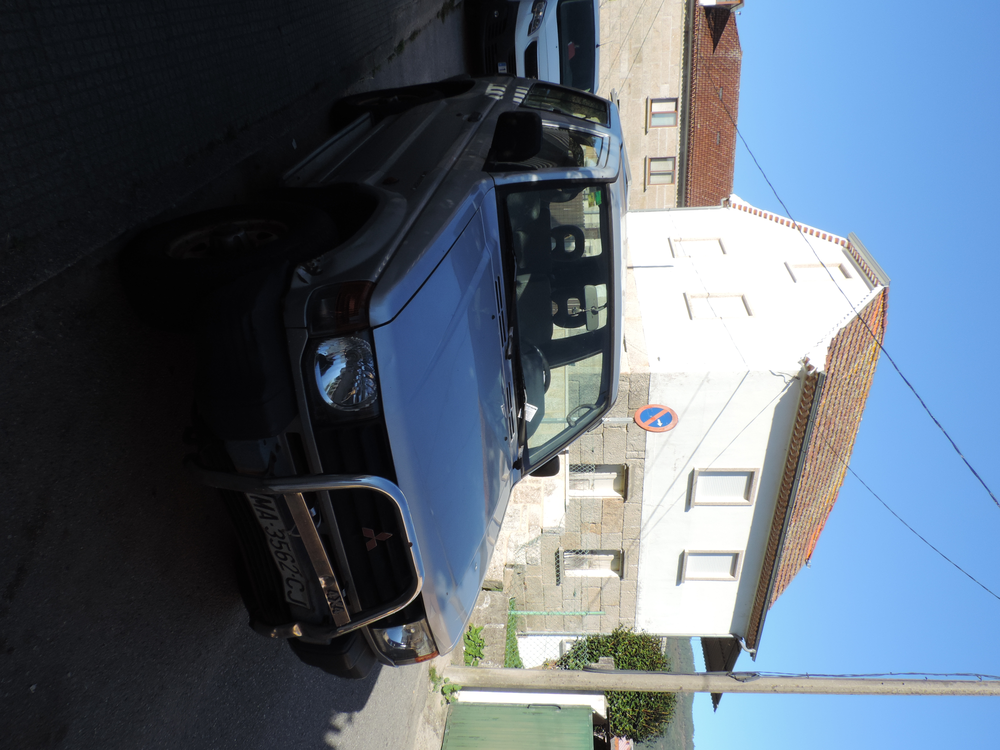
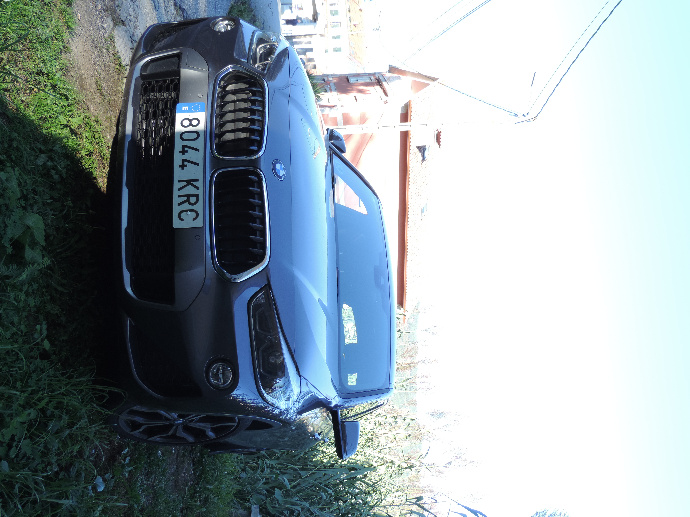

◈Añade aquí fotos/foto1.jpg
La ría de MoañaAgua · Luz · HorizonteFoto hecha por Ancor y X
Un proyecto fotográfico de Ancor y X, explorando la ría, la costa y los pequeños detalles de la naturaleza. Dos miradas, distintas cámaras y una misma pasión por capturar momentos.
Cada imagen tiene una historia. Añadid vuestras fotos a la carpeta fotos para mostrarlas aquí.






Este espacio reúne fotografías hechas por nosotros. Cada imagen debe llevar el crédito de quien la tomó.
Fotografía de paisajes, costa y naturaleza. Explorando Galicia y aprendiendo a capturar cada lugar desde una perspectiva propia.
Equipo · Nikon COOLPIX P520Una segunda mirada y nuevas formas de capturar momentos. Fotografía con una Samsung Miniket.
Equipo · Samsung MiniketAncor Photography · Un proyecto fotográfico de Ancor y X.